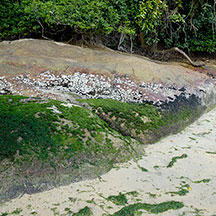
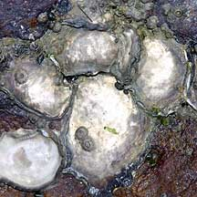
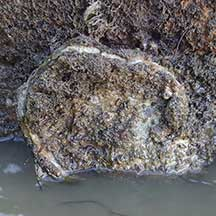

|
|
| bivalves text index | photo index |
| Phylum Mollusca > Class Bivalvia > Family Osteridae |
| Plain
rock oyster awaiting identification* Family Ostreidae updated Sep 2019 Where seen? This oyster is commonly seen on our Northern shores on boulders, rocks, jetty pillings, sea walls. Often, there is a crowded line of these oysters, with many individuals squashed next to one another, along the high water mark. On undisturbed shores they can become quite large. Very large ones are sometimes found on boulders close to the low water mark. The shell is often covered with encrusting lifeforms and they are thus overlooked. Features: 8-15cm. The two-part shell is thick and chalky. Individual shells may form a shape like a shallow box with a lid. Others may form smooth slightly domed circular shapes. Oysters are difficult to distinguish by shell shape alone and those on this page may in fact be different species that appear similar. |
 Oysters often form a distint band on hard surfaces near the high water mark. Chek Jawa, Jan 08 |
 Chek Jawa, May 04 |
 Chek Jawa, Oct 04 |
*Species are difficult to positively identify without close examination.
On this website, they are grouped by external features for convenience of display.
| Plain rock oysters on Singapore shores |
On wildsingapore
flickr
|
| Other sightings on Singapore shores |
 Coney Island, Nov 20 Shared by Richard Kuah on facebook. |